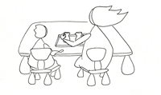

Il était une fois ...
L’accueil de chaque enfant, l’espace qui constitue cette ambiance et le travail de l’équipe éducative sont définis par la pédagogie de Maria Montessori.
Pour M. Montessori la tâche de l’éducation est de réunir les conditions les plus favorables pour permettre un développement harmonieux au cours des premières années de la vie.
Notre travail se fonde sur la notion d’un attachement nécessaire de l’enfant, attachement complémentaire et différent sur lequel l’enfant et sa famille pourront prendre appui et vérifier chaque jour la fiabilité de l’autre.
L’accueil des enfants à Pomme d’Api est un cheminement du respect des individualités, des différences, du caractère unique de chacun et de ses manifestations.
La Crèche se veut non seulement un lieu d’accueil, mais aussi un lieu de vie complémentaire à la famille, c’est-à-dire un espace de développement pour l’enfant où le bien être de chacun est le maître mot.
Les activités sont présentées individuellement, ceci dans le respect du rythme de chacun … car chaque enfant est unique.
Comme les enfants n’ont pas tous les mêmes besoins au même moment, la mise à disposition du matériel avec la possibilité de choisir et de l’utiliser aussi longtemps qu’ils le souhaitent permet de satisfaire leurs intérêts.
Grâce à la possibilité qu’offre le matériel Montessori d’autocorrection, l’enfant en s’exerçant et en observant, focalise son attention et développe peu à peu sa capacité de concentration. L’éducateur intervient avec justesse et discrétion, accordant son attitude de manière plus fine à l’enfant, au groupe. Il instaure un climat de confiance, joie et liberté.
L’enfant prend ainsi peu à peu conscience de son identité, il s’adapte de mieux en mieux à son environnement sur lequel il expérimente sa capacité d’agir positivement.
